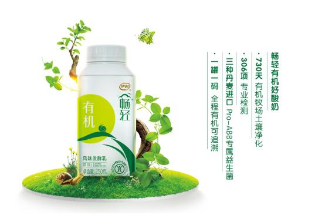

伊利畅轻有机风暴来袭 低温益生菌酸奶进入有机时代
2017-04-18 14:41:45 来源: 综合 作者:
随着生活水平的不断提高，食品健康理念不断深入人心。作为健康食品的代表---低温酸奶，更是深受广大消费者的青睐。伊利畅轻作为低温益生菌酸奶行业领导品牌，率先全国性大举布局低温有机酸奶这一大空白市场，继2015年推出了首款低温益生菌有机酸奶后，在2017年初又推出“有机燕麦”新品，未来还会继续创新“有机系列产品”。3月以来，伊利畅轻低温有机酸奶在全国各大城市的商超和卖场实现了全面铺货，国内低温有机酸奶的历史空缺终于添上了完美的一环。
酸奶分两种：有机酸奶VS其他酸奶
近年来，有机蔬菜、有机水果、有机粮油、有机牛奶等产业早已欣欣向荣，有机食品的理念深入人心，而畅轻推出有机酸奶，宣告着酸奶行业也进入了有机时代。
以伊利品牌为背书，畅轻有机酸奶包括三大品质标准：
奶源标准：畅轻低温益生菌有机酸奶必须发酵自伊利专属有机牧场，奶牛所食用的有机牧草必须经过730天土壤净化后自然生长;
配料标准：精选有机食材，零污染零添加;
检测标准：306项专业检测，确保一罐一码，全程有机可追溯。

可以说，畅轻有机酸奶不仅重新定义了酸奶行业，也实现了酸奶品类的消费体验升级：从“普通酸奶”到“有机酸奶”，从“简单调节肠道功能”到“高端品质享受”，对于酸奶行业和消费者而言，其意义影响可谓深远。
低温才能活菌，带来真正肠道消化力
随着消费者对活性益生菌的认知逐渐普及，低温益生菌酸奶因能保持益生菌的最大活性，越来越受到消费者青睐。
发酵完成后的酸奶，如果在常温状态下保存,乳酸菌会继续发酵,不仅口感会越来越酸，活的乳酸菌还会因过度生长而死亡，而低温保存可让乳酸菌保持在“休眠状态”，这样才能保证有活的、足够数量、对宿主有益的微生物菌群——这也正是判定益生菌酸奶是否有效的三个标准。
作为低温益生菌酸奶行业领导品牌，伊利畅轻不仅有远超普通酸奶的优势菌种的选择，更保证了菌种更高的稳定性和更高的存活性。
首先，每百克畅轻有机酸奶就含有1亿CFU的丹麦进口A+BB专属益生菌，嗜酸乳杆菌(即A菌)抑制肠道有害菌，利于有益菌群生长;乳双歧杆菌(即B菌)、长双歧杆菌(即B菌)帮助肠道蠕动，促进肠道消化。
其次，伊利畅轻不断完善冷链建设，每一瓶畅轻有机酸奶都经过全程冷链低温保存，保障了菌种的超强活性，不但大大增强了畅轻有机酸奶产品的功能性，同时也实现了行业突破。
对于行业而言，伊利畅轻低温有机酸奶的全面上市，开辟了一块空白市场，带来了全新的商业机遇。对于消费者而言，每天一瓶畅轻有机酸奶，不仅能享受高品质饮用体验，更可以补充一天所需的益生菌。优质菌种，全程低温冷链保存，带来真正的肠道消化力，为身心带来轻盈舒畅!